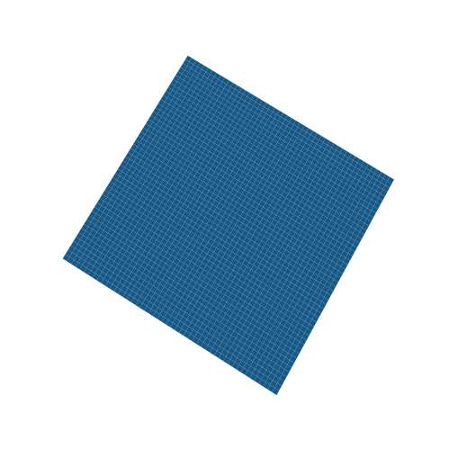
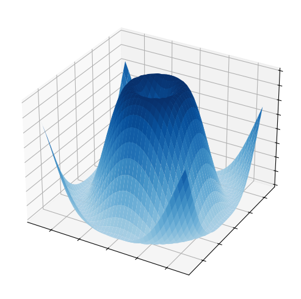

4 Dérivée d’une fonction bivariée & Elasticité partielle
En économie et marketing. ou en finance, de nombreuses focntions dépendent de plusieurs critères, autrement dit,, des variables. Lorsque ces fonctions reposent sur \(2\) variables, on les appellent fonctions bivariées.
Mathématiquement, on associe » chaque couple de varaiable \((x, y)\) du domaine de définition de \(f\), une valeur réelle notée, \(f(x, y)\).
4.1 Objectifs
I. Dérivée d’une fonction bivariée :
- Cas simple (sans interaction)
- Cas complexe (avec interaction)
- Elasticité d’une fonction bivariée :
- Définition et calcul
- Interprétation
Exemple 1 : Les ventes (\(V\)) d’un produit sont fonction du prix du produit (\(x\)) et des dépenses publicitaires réalisées (\(y\)) :
\[ V = f(x,y) = -ax + by \tag{4.1}\]
Avec \(a\) et \(b\) des constantes réelles positives.
Exemple 2 : Le profit total \(\pi\) d’une entreprise dépend de la quantité produite (\(x\)) du bien #1 et de la quantité produite (\(y\)) de biens #2 :
\[ \pi = f(x, y) = 50x - 10x^2 + 40y - 5y^2 \]

4.2 Dérivée Partielle
4.2.1 Dérivée partielle par rapport à \(x\)
On appelle dérivée partielle de \(f\) par rapport à \(x\) au point \((x, y)\) :
\[ f\prime_x(x,y) = \lim_{h \to 0} \frac{f(x + h, y) - f(x,y)}{h} \]
En pratique, la dérivée partielle par rapport à \(x\) consiste à dériver par rapport à \(x\) tout en gardant \(y\) constant.
4.2.2 Dérivée partielle par rapport à \(y\)
On appelle dérivée partielle de \(f\) par rapport à \(y\) au point \((x, y)\) :
\[ f\prime_y(x,y) = \lim_{h \to 0} \frac{f(x, y + h) - f(x,y)}{h} \]
En pratique, la dérivée partielle par rapport à \(y\) consiste à dériver par rapport à \(y\) tout en gardant \(x\) constant.
GRAPHIQUE
En reprenant l’Equation 4.1, \(f(x, y)\) peut s’écrire \(f_1(x) + f_2(y)\) => pas d’interaction entre \(x\) et \(y\).
$$ \[\begin{aligned} f\prime_x(x,y) & = \lim_{h \to 0} \frac{f(x + h, y) - f(x,y)}{h} \\ & = \lim_{h \to 0} \frac{-a(x + h) + by - (-ax + by)}{h} \\ & = \lim_{h \to 0} \frac{-ah}{h} \\ & = {\color{red} -a} \end{aligned}\] \[\begin{aligned} f\prime_y(x,y) & = \lim_{h \to 0} \frac{f(x, y + h) - f(x,y)}{h} \\ & = \lim_{h \to 0} \frac{-ax + b(y + h) - (-ax + by)}{h} \\ & = \lim_{h \to 0} \frac{bh}{h} \\ & = {\color{red} b} \end{aligned}\]$$
Important
Dans le cas de focntions sans interactions, \(f\prime_x(x,y) = f\prime_1(x)\) et \(f\prime_y(x,y) = f\prime_2(y)\)
4.3 Dérivées secondes d’une fonction bivariée
(2 heures)
Dérivées secondes d’une fonction bivariée
Les règles de calculs des dérivées secondes sont les mêmes que celles s’appliquant aux dérivées faites précédemment (cf. Module1).
Elasticités partielles
(2 heures)
Exemple :
La demande pour un bien dépend du prix p et du revenu R.
Pour un revenu constant R = 100, un consommateur observe :
Si p = 20 euros et augmente de 1%, la demande diminue de 0,19 %
Si p = 50 euros et augmente de 1%, la demande diminue de 0,68 %
Si p = 80 euros et augmente de 1%, la demande diminue de 1,78 %
L’élasticité de la demande par rapport au prix n’est pas constante : plus le prix est élevé, plus la demande diminue suite à une augmentation du prix.
47
Pour un revenu constant R = 1000, le consommateur observe :
Si p = 20 euros et augmente de 1%, la demande diminue de 0,061 %
Si p = 50 euros et augmente de 1%, la demande diminue de 0,167 %
Si p = 80 euros et augmente de 1%, la demande diminue de 0,296 %
Autrement dit, pour un revenu plus élevé, l’élasticité de la demande par rapport au prix est plus faible lorsque le revenu augmente, la demande est moins sensible aux variations de prix
- Interprétation :
Elasticité-prix de la demande :
- toujours négative (pour un niveau de revenu fixé, lorsque le prix augmente, la demande diminue)
- est faible : demande faiblement sensible au prix bien de première nécessité (alimentation, transport, énergie…)
- augmente (en valeurs absolues) quand le prix augmente à revenu constant (quand le prix est élevé, la demande devient plus sensible aux variations de prix)
- baisse (en valeurs absolues) quand le revenu augmente (à revenu élevé, le consommateur est moins sensible aux variations de prix).
55
Elasticité-revenu de la demande :
- toujours positive (pour un prix fixé, lorsque le revenu augmente, la demande augmente)
- est faible : demande faiblement sensible au revenu bien de première nécessité (alimentation, transport, énergie…)
- augmente quand le revenu augmente (quand le revenu est élevé, les ménages ont plus de marge pour leur consommation)
- augmente quand le prix augmente (quand le prix augmente, le bien devient coûteux pour le consommateur. Une augmentation du revenu aura donc un impact important sur la demande car cela facilitera l’achat du bien).
title: “Module 2 – Optimisation d’une fonction univariée” author: “Hélène Honoré & Roxane Cattan-Jallet” format: pdf lang: fr toc: true number-sections: true ———————
5 Introduction
Ce module approfondit l’étude des fonctions d’une variable réelle en introduisant la dérivée seconde et son rôle central dans l’optimisation (recherche de maxima et minima).
5.1 Objectifs
- Calculer et interpréter la dérivée seconde
- Déterminer les points critiques d’une fonction
- Identifier la nature des extrema (minimum / maximum)
6 Partie 1 – Dérivée seconde d’une fonction univariée
6.1 Définition
La dérivée seconde d’une fonction \(f\), notée \(f''\), est la dérivée de la dérivée première :
\[ f''(x) = (f'(x))' \]
Les règles de calcul sont identiques à celles vues pour la dérivée première (cf. Module 1).
6.2 Exemples
6.2.1 Exemple 1
Soit \(f(x) = x^2\).
\[ f'(x) = 2x \quad \text{et} \quad f''(x) = 2 \]
6.2.2 Exemple 2
Soit \(f(x) = \frac{1}{x}\).
\[ f'(x) = -\frac{1}{x^2}, \quad f''(x) = \frac{2}{x^3} \]
6.2.3 Exemple 3
Soit \(f(x) = e^{2x^2+3x}\).
\[ f'(x) = (4x+3)e^{2x^2+3x} \]
\[ f''(x) = (4 + (4x+3)^2)e^{2x^2+3x} \]
6.3 Exercices corrigés
6.3.1 Exercice 1
- \(f(x)=x^4+5x^3-2x^2\)
\[ f'(x)=4x^3+15x^2-4x, \quad f''(x)=12x^2+30x-4 \]
- \(g(x)=5\ln(x)+5x-2\), \(x>0\)
\[ g'(x)=\frac{5}{x}+5, \quad g''(x)=-\frac{5}{x^2} \]
- \(h(x)=5e^x+7x^2-2\)
\[ h'(x)=5e^x+14x, \quad h''(x)=5e^x+14 \]
7 Partie 2 – Optimisation d’une fonction univariée
7.1 Points critiques
Un point critique \(x_0\) vérifie :
\[ f'(x_0)=0 \]
Le point \((x_0,f(x_0))\) est alors un candidat à l’optimum.
7.1.1 Exemples
- \(f(x)=x^2 \Rightarrow x_0=0\)
- \(f(x)=\frac{1}{x}\) : aucun point critique
- \(f(x)=e^{2x^2+3x} \Rightarrow x_0=-\frac{3}{4}\)
7.2 Nature des points critiques
On étudie le signe de la dérivée seconde :
- Si \(f''(x_0)>0\) : minimum local
- Si \(f''(x_0)<0\) : maximum local
7.3 Exemple
Soit \(f(x)=x^2\).
\[ f''(0)=2>0 \Rightarrow f \text{ admet un minimum local en } x=0 \]
7.4 Exercices corrigés
7.4.1 Exercice 1
Soit \(f(x)=x^3-3x^2+2\).
- Points critiques : \(x=0\) et \(x=2\)
- \(f''(x)=6x-6\)
\[ f''(0)=-6<0 \Rightarrow \text{maximum local} \] \[ f''(2)=6>0 \Rightarrow \text{minimum local} \]
7.4.2 Exercice 2
Soit \(f(x)=xe^{-x^2}\).
- Points critiques : \(x=\pm \frac{1}{2}\)
- Minimum local en \(x=-\frac{1}{2}\)
- Maximum local en \(x=\frac{1}{2}\)
7.4.3 Exercice 3 – Coût moyen
Fonction de coût total :
\[ C(x)=\frac{x^2}{2}+20x+200 \]
Coût moyen :
\[ CM(x)=\frac{x}{2}+20+\frac{200}{x} \]
Minimum du coût moyen pour :
\[ x=20, \quad CM_{min}=40 \]
8 Conclusion
L’optimisation des fonctions univariées repose sur l’étude des dérivées première et seconde, outils essentiels pour l’analyse économique et la prise de décision rationnelle.